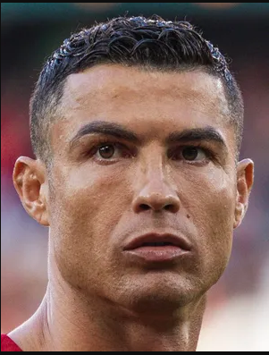

Ronaldo vaihtaa seuraa. Luukas kommentoi "Benderi käynnissä"
Päivitetty: 11. maaliskuuta 2024
Cristiano Ronaldo, yksi jalkapallon kaikkien aikojen suurimmista pelaajista, on tehnyt järkyttävän siirron urallaan. Portugalilaistähti on päättänyt vaihtaa seuraa ja liittyy nyt FCV:n riveihin.
Ronaldon siirto on herättänyt suurta huomiota futismaailmassa, ja se on yksi suurimmista siirroista viime aikoina. FCV:n fanit ympäri maailmaa odottavat innolla nähdäkseen, miten Ronaldo sopeutuu uuteen ympäristöön ja mitä hän tuo joukkueelleen.
Siirto tapahtui äkillisesti, ja monet asiantuntijat pohtivat, miten tämä muuttaa FCV:n pelityyliä ja mahdollisesti vaikuttaa heidän menestykseensä tulevissa kilpailuissa.
Ronaldo itse kommentoi siirtoa seuraavasti: "Olen innoissani uudesta haasteesta FCV:ssä. Uskon, että voimme saavuttaa suuria asioita yhdessä ja tehdä historiaa tässä uudessa vaiheessa urallani."